1 PARALLEL LINES
Let us recall
We have heard about parallel lines in class 6.
Lines that don't meet, keeping the same distance
between them.
We have also drawn them with a scale and a set square.
Two lines drawn at the same slant to a given line are
parallel. We've seen this also.
7
m
3c
We know that a parallelogram is a quadrilateral in which
the two pairs of opposite sides are parallel. Can you
draw this parallelogram with measures as given ?
Nothing much to say if the crossing lines are perpendicular. All angles are 90°.
Draw a line AB. Mark a point C on the
line and another point D outside the
line. Draw a line through C and D.
Find BCD. Use the Angle tool and click on
B, C, D in order (see what happens if you click
in a different order).
What if one line is a bit tilted ?
Mark the other angles also like this. What
is the relation between the angle measures ?
Try changing the position of D. Don't you see
a change in the angles ? Does the relation
change ?
Two small angles and two large angles.
What is the relation between them?
The two small angles are of the same measure.
The two large angles are of the same measure.
The sum of a small angle and a large angle is 180°.
9
What if we draw another line above, parallel to the blue line ?
Draw two intersecting lines and
mark the angles between them
as before. Mark a point E on CD and
draw a line through it parallel to AB.
Mark the four angles around E (You may
mark more points on the line for ease of
marking the angles).
Now the blue line above makes four angles with
the green line. What can you say about them?
Let's look only at the small angle below and the
marked angle above.
What is the relation between the eight
angles you have marked now ? Try
changing the position of D. Does the
relation change when the angle measures
change ? Try changing the position of E.
What happens when E takes the place
of C ?
The blue lines are parallel. So these two must be
of the same measure.
A change in angle
Suppose there is slight change in the slant
of two lines with another line. The two
lines won't be parallel. For example, look
2c
m
at this figure:
The blue lines in the figure appear to be
parallel. As there is a difference of 1° in
the slants, they will meet when extended
sufficiently. We can calculate how much
What about the other angles above ?
to be extended. You've to extend them by
more than a metre for them to meet!
Draw two parallel lines and an
intersecting line as in the earlier
activity. Mark the eight angles around
the points of intersection. You may hide
their measures (Right click and uncheck
Show Label box). Give the same colour to
the four small angles of the same measure
(Right Click Object Properties
Colour) Choose the colour you want. You
can change Opacity. In the same way,
give another colour to all the large angles
Suppose we start with an angle other than 50°.
The measures of the other angles will change. of the same measure.
But the relation between the angles will be the
same. That is,
A line intersects two parallel lines at angles of
the same measure.
11
Standard - VII
11
Page 12
Figure fig_ch01_p012_01 (Page 12)
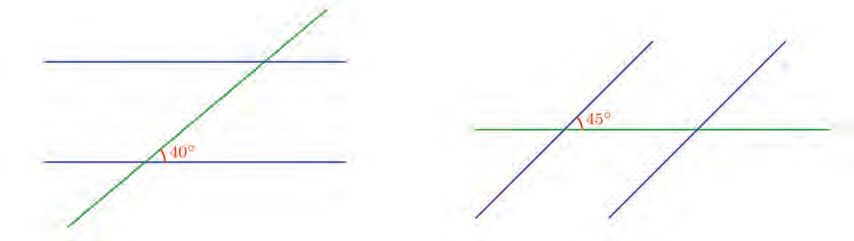
Figure fig_ch01_p012_02 (Page 12)
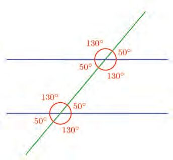
Figure fig_ch01_p012_03 (Page 12)
Mathematics
In each of the pictures below, can you calculate the other seven angles which the
parallel blue lines make with the green line ?
Matching angles
We have seen the relations between the four angles
made by two intersecting lines. What can we say about
the relation between the eight angles formed when a
line cuts two parallel lines ?
Let's take another look at this figure which we saw
earlier.
We know the relation between the four angles below.
Same is the relation between the four angles above.
What if we take an angle from below and an angle from above ?
If both are small angles, each is 50°.
If both are large, each is 130°.
If one is small and the other is large; the small one is 50°, the large one 130°; and the
sum is 180°.
The relations remain the same even if the angles change, right ? So we can say this
in general :
Of the angles made when two parallel lines are cut by a slanting line,
the small angles are of the same measure.
the large angles are of the same measure.
a small angle and a large angle add up to 180°.
If the intersecting line is perpendicular to one of the parallel lines, it would be
perpendicular to the other line too, and all angles would be right angles.
12
Standard - VII
12
Page 13
Figure fig_ch01_p013_01 (Page 13)
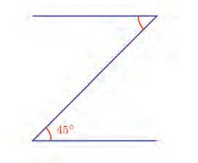
Figure fig_ch01_p013_02 (Page 13)
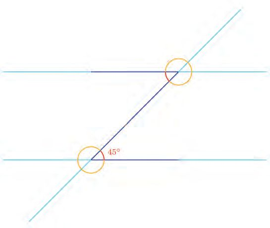
Figure fig_ch01_p013_03 (Page 13)
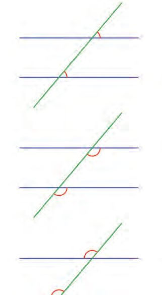
Figure fig_ch01_p013_04 (Page 13)
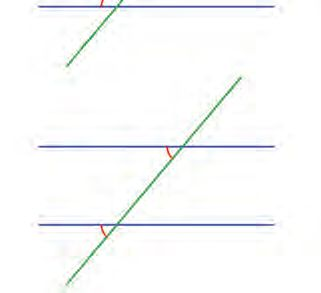
Figure fig_ch01_p013_05 (Page 13)
Parallel Lines
Now, look at this figure.
Position and angle
We may group the angles formed when
two parallel lines are cut by another line
based on their position. The figures below
show angle pairs in the same position.
top right
The top and bottom lines are parallel. What is
the measure of angle above ?
top right
To see all the angles clearly, let's suppose the
lines are extended.
bottom right
bottom right
top left
top left
bottom left
Look at the two small angles formed when the bottom left
slanting line cuts the top and bottom parallel
lines. These are the angles in the first figure. So
Angles in each such pair are called
they are of the same measure.
corresponding angles. The angles in each
pair measure the same.
13
Standard - VII
13
Page 14
Figure fig_ch01_p014_01 (Page 14)
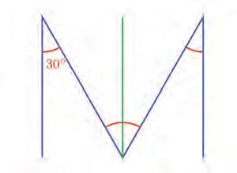
Figure fig_ch01_p014_02 (Page 14)
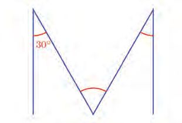
Figure fig_ch01_p014_03 (Page 14)
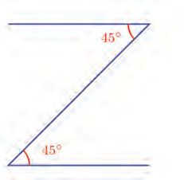
Figure fig_ch01_p014_04 (Page 14)
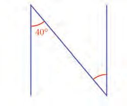
Figure fig_ch01_p014_05 (Page 14)
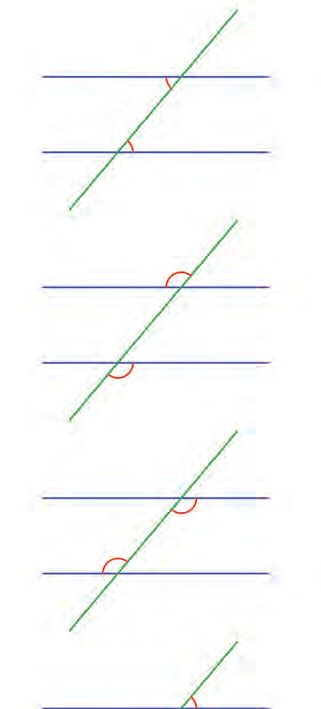
Figure fig_ch01_p014_06 (Page 14)
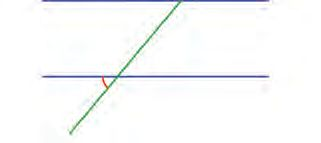
Figure fig_ch01_p014_07 (Page 14)
Mathematics
Opposite positions
That is, the angle above is also 45°.
The figures below show the angles in
opposite positions when two parallel lines
are cut by another line
bottom left
What if the figure looks like this ?
top right
top left
bottom right
This is the first figure with the angle slightly
changed and turned a bit, isn't it ?
What is the measure of the other angle ?
top left
bottom right
Now look at this figure :
top right
The vertical lines are parallel. But there is no
line cutting them. How about drawing another
vertical line ?
bottom left
Angles in each such pair are
called alternate angles. The
angles in each pair measure the
same.
14
Standard - VII
14
Page 15
Figure fig_ch01_p015_01 (Page 15)
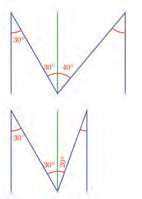
Figure fig_ch01_p015_02 (Page 15)
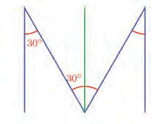
Figure fig_ch01_p015_03 (Page 15)
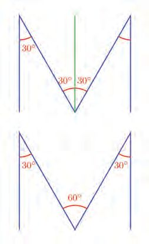
Figure fig_ch01_p015_04 (Page 15)
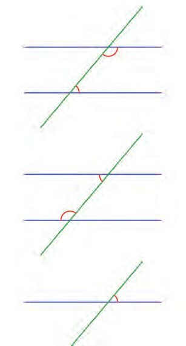
Figure fig_ch01_p015_05 (Page 15)
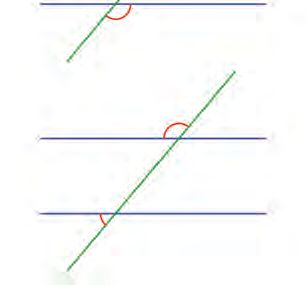
Figure fig_ch01_p015_06 (Page 15)
Parallel Lines
In and out
Now the, middle angle is in two parts. We can
find the left part.
The figures below show the interior and
exterior angle pairs when two parallel
lines are cut by another line.
inner right
inner right
What about the right part ?
Let’s try different measures for this angle:
inner left
inner left
outer right
outer right
What should be this angle to get a nice figure?
outer left
outer left
The first two pairs are called co-interior
angles and the last two pairs co-exterior
angles. The sum of the angles in each such
pair is 180°.
Let's draw a parallelogram. Draw
two lines AB and AC. Through
B draw a line parallel to AC and through
C draw a line parallel to AB. The point
of intersection of these lines is D. Draw
parallelogram ABDC using Polygon tool.
We can see all angles if we click in the
Another question : Can you find out the other
angles in the given parallelogram ?
parallelogram using Angle tool.
First, take the angle above the 55° angle. To
determine this, we shall look at the angles of
intersection of the left side with the top and
bottom parallel lines.
What is the relation between these angles?
Try changing the position of C. Do the
angles change ? And the relation between
them ?
The 55° angle and the angle above
it form a pair of small angle and
large angle.
So their sum is 180°.
This means the top angle = 180° 55° = 125°.
Now look at the angle to the
right of the marked angle.
To calculate this, look at the
angles made by the left and
right parallel sides with the
bottom line.
The 55° angle and the angle on its right are a small angle and a large angle of these
angles.
So, this angle also is 125° as calculated earlier.
Can't you Ànd the fourth angle, like this ?
Now try these problems:
(1) Draw the parallelogram below with the given measures.
3c
m
Draw two parallel lines. Mark a
point on each. Mark a third point
in between them. Draw lines joining the
points on the lines with the third point.
Mark the angles which these lines make
with the parallel lines. Also mark the
5 cm
Calculate the other three angles.
angle between the lines.
ST-359-2-MATHS (E)-7-VOL-1
(2) The top and bottom blue lines in the figure
are parallel. Find the angle between the
green lines.
What is the relation between the three
angles? Try changing the position of the
points. Does the relation between the
angles remain the same ?
(3) In the figure, the pair of lines slanted to the left are parallel; and also the pair of
lines slanted to the right.
Draw this figure :
2 cm
17
Standard - VII
17
Page 18
Figure fig_ch01_p018_01 (Page 18)
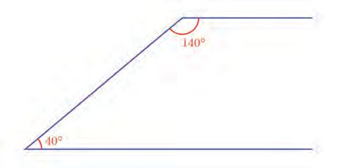
Figure fig_ch01_p018_02 (Page 18)
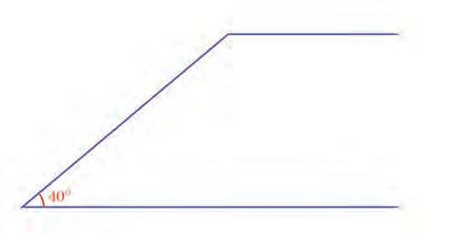
Figure fig_ch01_p018_03 (Page 18)
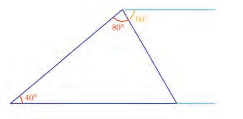
Figure fig_ch01_p018_04 (Page 18)
Mathematics
Triangle sum
Look at this figure :
The top and bottom lines are parallel.
So, can you calculate the angle at the top ?
If this angle is drawn less than 140°, then the two lines will meet.
Let’s decrease it by 60°.
Now we have a triangle.
What are the angles in this triangle ?
The left angle is 40°. The top angle is 140° – 60° = 80°.
18
Standard - VII
18
Page 19
Figure fig_ch01_p019_01 (Page 19)
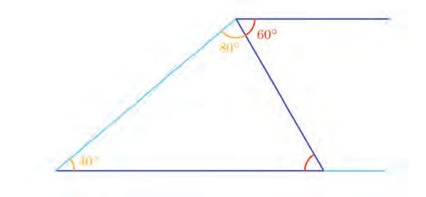
Figure fig_ch01_p019_02 (Page 19)
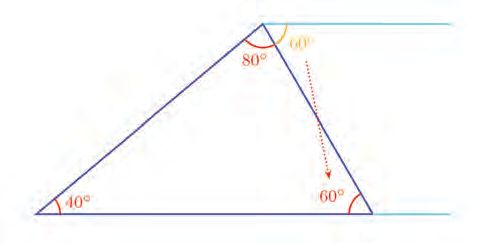
Figure fig_ch01_p019_03 (Page 19)
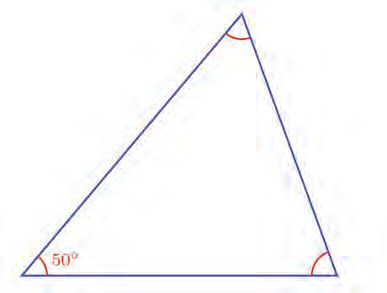
Figure fig_ch01_p019_04 (Page 19)
Parallel Lines
What about the third angle ?
It is one of the small angles which the new slanted line makes with the parallel lines .
Its measure is the same as that of the small angle which this line makes with the top
line.
Isn't the top small angle 60° ?
So the bottom small angle is also 60°.
Thus the 60° which we took away from the top reappears at the bottom as an angle
of the triangle.
The sum of this angle and the top angle of the triangle 80° + 60° = 140°.
Now look at this figure:
Can you calculate the sum of the other two angles of this triangle ?
In the first problem, the right side of the triangle was got by drawing a slanted line
instead of the parallel line. Let's think in the reverse. A parallel line instead of the
slanted right side. What is the angle which this parallel line makes with the left side ?
When we drew the triangle, this angle split into two. One part is the top angle of the
triangle. What about the other part ?
That is, one part of the 130° angle is the top angle of the triangle and the other part is
the angle on the right in the triangle.
Using the Polygon tool, draw
a triangle and mark the angles
So, the sum of these two angles of the triangle is
(click inside the triangle using the Angle
130°.
tool). What is the sum of all angles ?
How do we state in general what we've learnt from
Change the vertices of the triangle and
this problem ?
check.
If we subtract the measure of one angle of a
triangle from 180°, we get the sum of the other two angles.
For example, if one angle of a triangle is 60°, the sum of the other two angles:
180° 60° = 120°
What about the sum of the three angles of the triangle ?
This is true for any triangle.
The sum of all angles of a triangle is 180°
Now try this problem :
One angle of a right triangle is 40°. What is the measure of the angle other than
the right angle ?
Let's think this way. The sum of the angles other than the right angle is
180° 90° = 90°
One of them is 40°. Then the other angle is
90° 40° = 50°
We can think in another way as well. The sum of the three angles is 180°. The sum
of two of them
90° + 40° = 130°
So the third angle
180° 130° = 50°
Another problem :
One angle of a triangle is 72°. The other two angles are of equal measure. What
are their measures ?
What is the sum of the other two angles ?
180° 72° = 108°
Since the other two angles are equal, each is half the sum, isn't it ? So each is
108c
2 = 54c
Now try these problems :
(1) Draw the triangle with the given measures.
(2) The figure shows a triangle drawn in a rectangle.
(3) The top and bottom lines in the figure are
parallel.
Draw two parallel lines and mark
two points on each. Join them
as in the figure and mark the point of
intersection. Use the Polygon tool to draw
two triangles and mark their angles.
Calculate the third angle of the bottom
triangle and all angles of the top triangle.
(4) The left and right sides of the large triangle What is the relation between the angles of
are parallel to the left and right sides of the
the triangle ?
small triangle.
Try changing the positions of the points.
Calculate the other two angles of the large
triangle and all angles of the small triangle.
5. A triangle is drawn inside a parallelogram.
Calculate the angles of the triangle.
22
Standard - VII
22
Draw a triangle and mark a point
on one of the sides. Draw a line
through this point parallel to another side
of the triangle. Mark the point where this
line meets the third side. Draw the small
triangle with one corner of the triangle
and the points on the sides as vertices.
Mark the angles of the first triangle and
the small triangle. What is the relation
between these angles ? Try changing the
corners of the triangle.